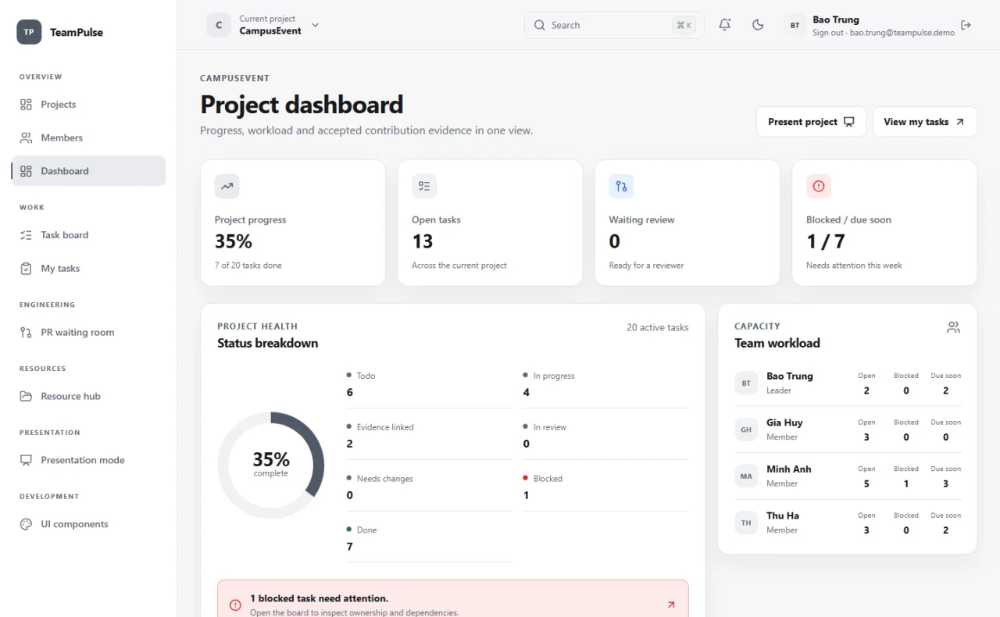

TeamPulse
Full-stack · Team project
A workspace for student teams to plan tasks, attach evidence, review work, and report contributions.
I built workspace membership and permissions, added evidence and review workflows, and implemented the contribution summary.
ASP.NET Core · React · TypeScript · EF Core · SQL Server
